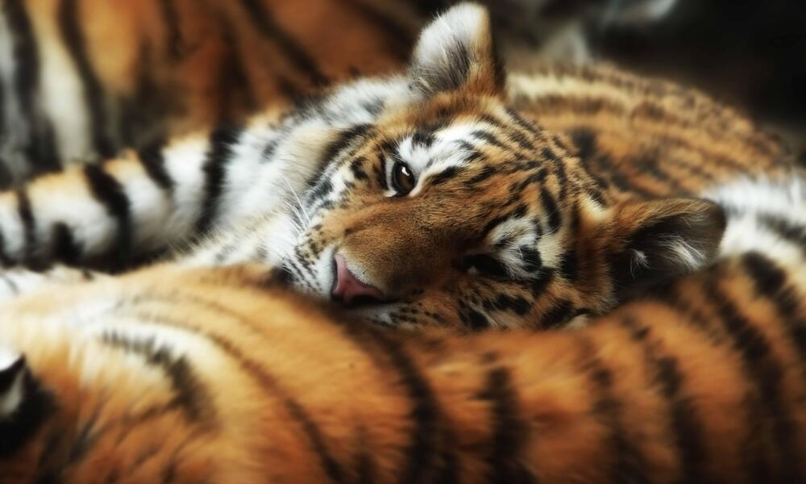
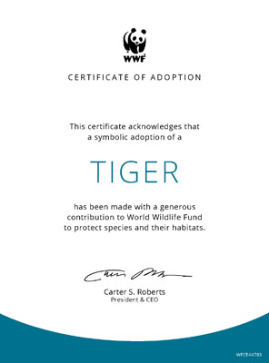
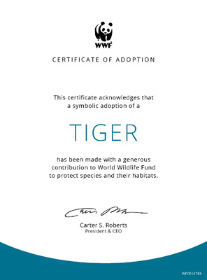

Overview

Saving nature is at the very heart of what we do as WWF. For 60 years, we have made it our mission to find solutions that save the marvelous array of life on our planet by applying the best science available and working closely with local communities.But our work is far from done. Humans are behind the current rate of species extinction, which is at least 100–1,000 times higher than nature intended. We’ve seen an astonishing 60% decline in the size of populations of mammals, birds, fish, reptiles, and amphibians in just oveectionr 40 years, according to WWF's Living Planet Report 2018.
And the impacts will reach far beyond the potential cultural loss of iconic species like tigers, rhinos and whales. The good news is we’ve also seen what’s working. WWF has been part of successful wildlife recovery stories ranging from southern Africa’s black rhino to black bucks in the Himalayas. And this, in turn, is helping to protect rich and varied ecosystems while ensuring people continue to benefit from nature. This much is clear: we cannot afford to fail in our mission to save a living planet.
Back to TopView All Species
Why it Matters
We protect wildlife for many reasons. It is a source of inspiration. It nurtures a sense of wonder. It is integral to the balance of nature. In our work, WWF focuses on saving populations of the most ecologically, economically and culturally important species in the wild. Ultimately, by protecting species, we save this beautiful, vulnerable and utterly irreplaceable planet we call home.
It speaks to the power of the mighty predator that the first-ever global summit on a single species brought together world leaders to commit to a single purpose—doubling the number of wild tigers by 2022. WWF is playing a pivotal role in realizing this ambitious goal, which will ensure the king of the jungle will once again thrive across its range in 13 countries to benefit other wildlife and wild spaces, secure freshwater sources and a future for people too.
Back to TopHow You Can Help
 

Make a symbolic tiger adoption to help save some of the world's most endangered animals from extinction. HABITAT Tropical rain forests, evergreen forests, temperate forests, mangrove swamps, grasslands, and savannas.DIET Primarily large ungulates (hoofed mammals)THREATS Poaching for the illegal wildlife trade, retaliatory killings, and habitat loss INTERESTING FACTS Thanks to collaboration with local communities, political commitment from government, and sufficient funding and resources, there has been an increase from 3,200 to around 3,900 tigers in the wild (last official estimate from 2016).
More Info